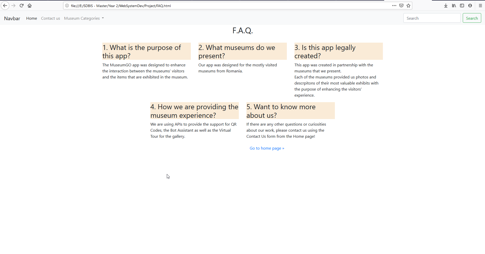

Community Draft
We are 3 students from Software Development master: Alex, Robert and Marius and we are trying to make an app that will help museum lovers to find all the information they need, in order to create an unforgettable experience. We thought of naming it MuseFind.
We proposed an app where people can easily find information about museums from Romania. It is called “MuseFind”. Also, we want to include a live gallery, so visitors can surf through our webpage and discover the paintings, sculptures and other secrets the museums hold.
We came up with this idea because we believe it is an interesting way to share knowledge and it could attract more people to visit Romania.
The structure of our website will have a homepage, a page about us and a page for each museum. We will also have a feature where the visitors of our website could add a museum to favorites.
We developed our solution using HTML and CSS.
The Home Page is split into 3 main sections:
Each of the images of the museums in the list is a hyperlink towards the Museum's official website.
There, the user can find more specific details about the museum and its exhibition, content and other things that he/she may be interested in.
The Frequently Asked Questions button has the purpose of redirecting the user to a Help page, in order to help the user understand the purpose of the application and how to properly use it.

We will use an QR code in order for our visitors to have a much easier way to acces our website. We will also use a QR code for each item displayed in the museums. For this we will use a MetaQRcode API.
The METAQRCODE API offers a way for developers to build and place their own XML metadata within a QRCode. This API is Rest-based, and JSON or XML can be used for consumption. You can upload your XML document and link it with a QRcode using MetaQRcode.
The MetaQRcode XML text is referred to as the Repository Entry. The archive is the container for all repository entries in the MetaQRcode, so the repository is the container for all XML documents. At least one XSD must be shared with any XML text within the MetaQRcode.
An XSD is considered a Catalog Entry in the MetaQRcode. The Catalog is the container for all XSDs. You have to select one or more XSDs while importing an XML. The XML has to conform with the XSD that is provided. During the upload stage, the MetaQRcode will verify compliance. You can specify one XSD using the API (outside XML) when you upload an XML, or you can specify one or more XSDs within the XML folder. REST json and REST xml API are exposed to metaQRcode.
To continue, that same API requires authentication. You will use two methods to authenticate the MetaQRcode:
Each XML you choose to upload to the MetaQRcode must be XSD (catalog entry) compatible. You can use an existing XSD or upload your own XSD. Each XSD is used by all users. Before uploading a new one, it's necessary to check if the XSD you need is already in the collection.
Reducing the number of similar XSDs within the MetaQRcode server is critical. This is why you can use importation, inclusion, extensions and all standard XSD functionality in XSD. You always have to refer to a current schema using the MetaQRcode URL to access such functions.
We could use a conversational user interface offered by Azure Bot Services for the use of natural user interactions. The Azure Bot Service and Bot Platform provide tools all in one place to create, analyze, deploy, and handle smart bots. Developers of tools, models, and AI resources may build bots that use expression, understand natural language, manage questions and answers, and more with the use of the flexible and extensible platform offered by the SDK.
Bots have an interface that feels less like using a machine, or at least an intelligent robot, and more like interacting with a human. They can be used to pass basic, routine activities to automated processes that may no longer need direct human interaction, such as making a dinner reservation or collecting profile information. Users chat using text, dynamic cards, and voice with a bot. A bot dialog can be a simple question and answer or it can be a complicated dialogue that offers access to resources intelligently. Bots are a lot like current web apps, live on the internet and sending and receiving messages using APIs.
Depending about what type of bot it is, what's in a bot varies greatly. In order to offer exponentially dynamic interactions on a wide range of platforms, current bot software depends on a stack of technologies and instruments. However, with very little code involved, a basic bot might merely accept a message and echo it back to the user. Bots can do the same things as other forms of software can do, such as reading and writing scripts, using databases and APIs, and doing routine programming tasks. Their use of mechanisms typically reserved for human-to-human contact is what makes bots special.
As for every form of program, the process of making a good bot involves a detailed understanding of the aims, procedures and user needs. A basic bot can be built or more specialized features such as speech, interpreting natural language, and answering questions can be used.
Your bot is a web service that implements a conversational interface and communicates with the Bot Framework Service to send and receive messages and events. Bot Framework Service is one of the components of the Azure Bot Service and Bot Framework. You can create bots in any number of environments and languages. As part of the Azure Bot Service and Bot Framework, there are additional components you can use to extend your bot's functionality:
Feature |
Description |
Add natural language processing |
Enable your bot to understand natural language, understand spelling errors, use speech, and recognize the user's intent |
Answer questions |
Add a knowledge base to answer questions users ask in amore natural, conversational way |
Manage multiple models |
If using more than one model, such as for LUIS and QnA Maker, intelligently determine when to use which one during your bot's conversation |
Add cards and buttons |
Enhance the user experience with media other than text, such as graphics, menus, and cards |
Bots are complex apps, with a lot of different parts working together. Like any other complex app, this can lead to some interesting bugs or cause your bot to behave differently than expected. Before publishing, test your bot. There are several ways to test bots before they are released for use:
When the bot is ready to be available on the web, you can publish it to Azure or to your own web service or data center.
The bot can be connected to channels such as Facebook, Skype, Slack, Microsoft Teams and others. Bot Framework does most of the work necessary to send and receive messages from all of these different platforms - your bot application receives a unified, normalized stream of messages regardless of the number and type of channels it is connected to.
There are ways to improve the capabilities and performance of your bot by using the data collected in Azure portal. You can get service-level and instrumentation data like traffic, latency, and integrations. Analytics also provides conversation-level reporting on user, message, and channel data.